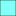
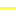
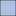

<!doctype html>
<html lang="en">
    <head>
        <meta charset="utf-8">
        <meta http-equiv="X-UA-Compatible" content="IE=edge">
        <meta name="viewport" content="initial-scale=1,user-scalable=no,maximum-scale=1,width=device-width">
        <meta name="mobile-web-app-capable" content="yes">
        <meta name="apple-mobile-web-app-capable" content="yes">
        <link rel="stylesheet" href="css/leaflet.css"><link rel="stylesheet" href="css/L.Control.Locate.min.css">
        <link rel="stylesheet" href="css/qgis2web.css"><link rel="stylesheet" href="css/fontawesome-all.min.css">
        <link rel="stylesheet" href="css/leaflet-control-geocoder.Geocoder.css">
        <link rel="stylesheet" href="css/leaflet-measure.css">
        <style>
        html, body, #map {
            width: 100%;
            height: 100%;
            padding: 0;
            margin: 0;
        }
        </style>
        <title></title>
    </head>
    <body>
        <div id="map" style="z-index:1;">
        </img></label> <alt="some_text" style="position:fixed;bottom:0;left:0;z-index:2;">
        </div>
        <script src="js/qgis2web_expressions.js"></script>
        <script src="js/leaflet.js"></script><script src="js/L.Control.Locate.min.js"></script>
        <script src="js/leaflet-svg-shape-markers.min.js"></script>
        <script src="js/leaflet.rotatedMarker.js"></script>
        <script src="js/leaflet.pattern.js"></script>
        <script src="js/leaflet-hash.js"></script>
        <script src="js/Autolinker.min.js"></script>
        <script src="js/rbush.min.js"></script>
        <script src="js/labelgun.min.js"></script>
        <script src="js/labels.js"></script>
        <script src="js/leaflet-control-geocoder.Geocoder.js"></script>
        <script src="js/leaflet-measure.js"></script>
        <script src="data/ComunaCaete_2.js"></script>
        <script src="data/Redvial_3.js"></script>
        <script src="data/Comunidadesindgenas_4.js"></script>
        <script src="data/TtulosdeMerced_5.js"></script>
        <script>
        var map = L.map('map', {
            zoomControl:true, maxZoom:28, minZoom:1
        }).fitBounds([[-38.1650230493757,-73.61687097444805],[-37.67416579633338,-72.73653076807587]]);
        var hash = new L.Hash(map);
        map.attributionControl.setPrefix('<a href="https://github.com/tomchadwin/qgis2web" target="_blank">qgis2web</a> &middot; <a href="https://leafletjs.com" title="A JS library for interactive maps">Leaflet</a> &middot; <a href="https://qgis.org">QGIS</a>');
        var autolinker = new Autolinker({truncate: {length: 30, location: 'smart'}});
        L.control.locate({locateOptions: {maxZoom: 19}}).addTo(map);
        var measureControl = new L.Control.Measure({
            position: 'topleft',
            primaryLengthUnit: 'meters',
            secondaryLengthUnit: 'kilometers',
            primaryAreaUnit: 'sqmeters',
            secondaryAreaUnit: 'hectares'
        });
        measureControl.addTo(map);
        document.getElementsByClassName('leaflet-control-measure-toggle')[0]
        .innerHTML = '';
        document.getElementsByClassName('leaflet-control-measure-toggle')[0]
        .className += ' fas fa-ruler';
        var bounds_group = new L.featureGroup([]);
        function setBounds() {
        }
        map.createPane('pane_OpenStreetMap_0');
        map.getPane('pane_OpenStreetMap_0').style.zIndex = 400;
        var layer_OpenStreetMap_0 = L.tileLayer('https://tile.openstreetmap.org/{z}/{x}/{y}.png', {
            pane: 'pane_OpenStreetMap_0',
            opacity: 1.0,
            attribution: '',
            minZoom: 1,
            maxZoom: 28,
            minNativeZoom: 0,
            maxNativeZoom: 19
        });
        layer_OpenStreetMap_0;
        map.createPane('pane_GoogleSatellite_1');
        map.getPane('pane_GoogleSatellite_1').style.zIndex = 401;
        var layer_GoogleSatellite_1 = L.tileLayer('http://mt1.google.com/vt/lyrs=s&x={x}&y={y}&z={z}', {
            pane: 'pane_GoogleSatellite_1',
            opacity: 1.0,
            attribution: '',
            minZoom: 1,
            maxZoom: 28,
            minNativeZoom: 0,
            maxNativeZoom: 18
        });
        layer_GoogleSatellite_1;
        map.addLayer(layer_GoogleSatellite_1);
        function pop_ComunaCaete_2(feature, layer) {
            var popupContent = '<table>\
                    <tr>\
                        <td colspan="2"><strong>CUT_REG</strong><br />' + (feature.properties['CUT_REG'] !== null ? autolinker.link(feature.properties['CUT_REG'].toLocaleString()) : '') + '</td>\
                    </tr>\
                    <tr>\
                        <td colspan="2"><strong>CUT_PROV</strong><br />' + (feature.properties['CUT_PROV'] !== null ? autolinker.link(feature.properties['CUT_PROV'].toLocaleString()) : '') + '</td>\
                    </tr>\
                    <tr>\
                        <td colspan="2"><strong>CUT_COM</strong><br />' + (feature.properties['CUT_COM'] !== null ? autolinker.link(feature.properties['CUT_COM'].toLocaleString()) : '') + '</td>\
                    </tr>\
                    <tr>\
                        <td colspan="2"><strong>REGION</strong><br />' + (feature.properties['REGION'] !== null ? autolinker.link(feature.properties['REGION'].toLocaleString()) : '') + '</td>\
                    </tr>\
                    <tr>\
                        <td colspan="2"><strong>PROVINCIA</strong><br />' + (feature.properties['PROVINCIA'] !== null ? autolinker.link(feature.properties['PROVINCIA'].toLocaleString()) : '') + '</td>\
                    </tr>\
                    <tr>\
                        <td colspan="2"><strong>COMUNA</strong><br />' + (feature.properties['COMUNA'] !== null ? autolinker.link(feature.properties['COMUNA'].toLocaleString()) : '') + '</td>\
                    </tr>\
                    <tr>\
                        <td colspan="2"><strong>SUPERFICIE</strong><br />' + (feature.properties['SUPERFICIE'] !== null ? autolinker.link(feature.properties['SUPERFICIE'].toLocaleString()) : '') + '</td>\
                    </tr>\
                </table>';
            layer.bindPopup(popupContent, {maxHeight: 400});
        }

        function style_ComunaCaete_2_0() {
            return {
                pane: 'pane_ComunaCaete_2',
                opacity: 1,
                color: 'rgba(35,35,35,0.7)',
                dashArray: '',
                lineCap: 'butt',
                lineJoin: 'miter',
                weight: 1.0, 
                fill: true,
                fillOpacity: 1,
                fillColor: 'rgba(138,165,215,0.7)',
                interactive: true,
            }
        }
        map.createPane('pane_ComunaCaete_2');
        map.getPane('pane_ComunaCaete_2').style.zIndex = 402;
        map.getPane('pane_ComunaCaete_2').style['mix-blend-mode'] = 'normal';
        var layer_ComunaCaete_2 = new L.geoJson(json_ComunaCaete_2, {
            attribution: '',
            interactive: true,
            dataVar: 'json_ComunaCaete_2',
            layerName: 'layer_ComunaCaete_2',
            pane: 'pane_ComunaCaete_2',
            onEachFeature: pop_ComunaCaete_2,
            style: style_ComunaCaete_2_0,
        });
        bounds_group.addLayer(layer_ComunaCaete_2);
        map.addLayer(layer_ComunaCaete_2);
        function pop_Redvial_3(feature, layer) {
            var popupContent = '<table>\
                    <tr>\
                        <td colspan="2"><strong>OBJECTID</strong><br />' + (feature.properties['OBJECTID'] !== null ? autolinker.link(feature.properties['OBJECTID'].toLocaleString()) : '') + '</td>\
                    </tr>\
                    <tr>\
                        <td colspan="2"><strong>ROL</strong><br />' + (feature.properties['ROL'] !== null ? autolinker.link(feature.properties['ROL'].toLocaleString()) : '') + '</td>\
                    </tr>\
                    <tr>\
                        <td colspan="2"><strong>ROL_LABEL</strong><br />' + (feature.properties['ROL_LABEL'] !== null ? autolinker.link(feature.properties['ROL_LABEL'].toLocaleString()) : '') + '</td>\
                    </tr>\
                    <tr>\
                        <td colspan="2"><strong>NOMBRE</strong><br />' + (feature.properties['NOMBRE'] !== null ? autolinker.link(feature.properties['NOMBRE'].toLocaleString()) : '') + '</td>\
                    </tr>\
                    <tr>\
                        <td colspan="2"><strong>CARPETA</strong><br />' + (feature.properties['CARPETA'] !== null ? autolinker.link(feature.properties['CARPETA'].toLocaleString()) : '') + '</td>\
                    </tr>\
                    <tr>\
                        <td colspan="2"><strong>REGION</strong><br />' + (feature.properties['REGION'] !== null ? autolinker.link(feature.properties['REGION'].toLocaleString()) : '') + '</td>\
                    </tr>\
                    <tr>\
                        <td colspan="2"><strong>ENROLADO</strong><br />' + (feature.properties['ENROLADO'] !== null ? autolinker.link(feature.properties['ENROLADO'].toLocaleString()) : '') + '</td>\
                    </tr>\
                    <tr>\
                        <td colspan="2"><strong>CONCESIONA</strong><br />' + (feature.properties['CONCESIONA'] !== null ? autolinker.link(feature.properties['CONCESIONA'].toLocaleString()) : '') + '</td>\
                    </tr>\
                </table>';
            layer.bindPopup(popupContent, {maxHeight: 400});
        }

        function style_Redvial_3_0() {
            return {
                pane: 'pane_Redvial_3',
                opacity: 1,
                color: 'rgba(251,255,4,1.0)',
                dashArray: '',
                lineCap: 'square',
                lineJoin: 'bevel',
                weight: 2.0,
                fillOpacity: 0,
                interactive: true,
            }
        }
        map.createPane('pane_Redvial_3');
        map.getPane('pane_Redvial_3').style.zIndex = 403;
        map.getPane('pane_Redvial_3').style['mix-blend-mode'] = 'normal';
        var layer_Redvial_3 = new L.geoJson(json_Redvial_3, {
            attribution: '',
            interactive: true,
            dataVar: 'json_Redvial_3',
            layerName: 'layer_Redvial_3',
            pane: 'pane_Redvial_3',
            onEachFeature: pop_Redvial_3,
            style: style_Redvial_3_0,
        });
        bounds_group.addLayer(layer_Redvial_3);
        map.addLayer(layer_Redvial_3);
        function pop_Comunidadesindgenas_4(feature, layer) {
            var popupContent = '<table>\
                    <tr>\
                        <td colspan="2"><strong>COMUNA</strong><br />' + (feature.properties['COMUNA'] !== null ? autolinker.link(feature.properties['COMUNA'].toLocaleString()) : '') + '</td>\
                    </tr>\
                    <tr>\
                        <td colspan="2"><strong>COMUNIDAD</strong><br />' + (feature.properties['COMUNIDAD'] !== null ? autolinker.link(feature.properties['COMUNIDAD'].toLocaleString()) : '') + '</td>\
                    </tr>\
                    <tr>\
                        <td colspan="2"><strong>PROVINCIA</strong><br />' + (feature.properties['PROVINCIA'] !== null ? autolinker.link(feature.properties['PROVINCIA'].toLocaleString()) : '') + '</td>\
                    </tr>\
                    <tr>\
                        <td colspan="2"><strong>REGION</strong><br />' + (feature.properties['REGION'] !== null ? autolinker.link(feature.properties['REGION'].toLocaleString()) : '') + '</td>\
                    </tr>\
                    <tr>\
                        <td colspan="2"><strong>REGISTRO</strong><br />' + (feature.properties['REGISTRO'] !== null ? autolinker.link(feature.properties['REGISTRO'].toLocaleString()) : '') + '</td>\
                    </tr>\
                    <tr>\
                        <td colspan="2"><strong>_NOM_PRE</strong><br />' + (feature.properties['_NOM_PRE'] !== null ? autolinker.link(feature.properties['_NOM_PRE'].toLocaleString()) : '') + '</td>\
                    </tr>\
                    <tr>\
                        <td colspan="2"><strong>_NUM_PRE</strong><br />' + (feature.properties['_NUM_PRE'] !== null ? autolinker.link(feature.properties['_NUM_PRE'].toLocaleString()) : '') + '</td>\
                    </tr>\
                    <tr>\
                        <td colspan="2"><strong>_PER_PRE</strong><br />' + (feature.properties['_PER_PRE'] !== null ? autolinker.link(feature.properties['_PER_PRE'].toLocaleString()) : '') + '</td>\
                    </tr>\
                    <tr>\
                        <td colspan="2"><strong>_PER_CO1</strong><br />' + (feature.properties['_PER_CO1'] !== null ? autolinker.link(feature.properties['_PER_CO1'].toLocaleString()) : '') + '</td>\
                    </tr>\
                    <tr>\
                        <td colspan="2"><strong>_PER_CO2</strong><br />' + (feature.properties['_PER_CO2'] !== null ? autolinker.link(feature.properties['_PER_CO2'].toLocaleString()) : '') + '</td>\
                    </tr>\
                    <tr>\
                        <td colspan="2"><strong>_PER_CO3</strong><br />' + (feature.properties['_PER_CO3'] !== null ? autolinker.link(feature.properties['_PER_CO3'].toLocaleString()) : '') + '</td>\
                    </tr>\
                </table>';
            layer.bindPopup(popupContent, {maxHeight: 400});
        }

        function style_Comunidadesindgenas_4_0() {
            return {
                pane: 'pane_Comunidadesindgenas_4',
                shape: 'triangle',
                radius: 5.0,
                opacity: 1,
                color: 'rgba(230,246,0,1.0)',
                dashArray: '',
                lineCap: 'butt',
                lineJoin: 'miter',
                weight: 1.0,
                fill: true,
                fillOpacity: 1,
                fillColor: 'rgba(218,90,81,1.0)',
                interactive: true,
            }
        }
        map.createPane('pane_Comunidadesindgenas_4');
        map.getPane('pane_Comunidadesindgenas_4').style.zIndex = 404;
        map.getPane('pane_Comunidadesindgenas_4').style['mix-blend-mode'] = 'normal';
        var layer_Comunidadesindgenas_4 = new L.geoJson(json_Comunidadesindgenas_4, {
            attribution: '',
            interactive: true,
            dataVar: 'json_Comunidadesindgenas_4',
            layerName: 'layer_Comunidadesindgenas_4',
            pane: 'pane_Comunidadesindgenas_4',
            onEachFeature: pop_Comunidadesindgenas_4,
            pointToLayer: function (feature, latlng) {
                var context = {
                    feature: feature,
                    variables: {}
                };
                return L.shapeMarker(latlng, style_Comunidadesindgenas_4_0(feature));
            },
        });
        bounds_group.addLayer(layer_Comunidadesindgenas_4);
        map.addLayer(layer_Comunidadesindgenas_4);
        function pop_TtulosdeMerced_5(feature, layer) {
            var popupContent = '<table>\
                    <tr>\
                        <td colspan="2"><strong>REGION</strong><br />' + (feature.properties['REGION'] !== null ? autolinker.link(feature.properties['REGION'].toLocaleString()) : '') + '</td>\
                    </tr>\
                    <tr>\
                        <td colspan="2"><strong>PROVINCIA</strong><br />' + (feature.properties['PROVINCIA'] !== null ? autolinker.link(feature.properties['PROVINCIA'].toLocaleString()) : '') + '</td>\
                    </tr>\
                    <tr>\
                        <td colspan="2"><strong>DESCCOMU</strong><br />' + (feature.properties['DESCCOMU'] !== null ? autolinker.link(feature.properties['DESCCOMU'].toLocaleString()) : '') + '</td>\
                    </tr>\
                    <tr>\
                        <td colspan="2"><strong>COMUNIDAD</strong><br />' + (feature.properties['COMUNIDAD'] !== null ? autolinker.link(feature.properties['COMUNIDAD'].toLocaleString()) : '') + '</td>\
                    </tr>\
                    <tr>\
                        <td colspan="2"><strong>TM</strong><br />' + (feature.properties['TM'] !== null ? autolinker.link(feature.properties['TM'].toLocaleString()) : '') + '</td>\
                    </tr>\
                    <tr>\
                        <td colspan="2"><strong>LETRA</strong><br />' + (feature.properties['LETRA'] !== null ? autolinker.link(feature.properties['LETRA'].toLocaleString()) : '') + '</td>\
                    </tr>\
                    <tr>\
                        <td colspan="2"><strong>INFORME</strong><br />' + (feature.properties['INFORME'] !== null ? autolinker.link(feature.properties['INFORME'].toLocaleString()) : '') + '</td>\
                    </tr>\
                </table>';
            layer.bindPopup(popupContent, {maxHeight: 400});
        }

        function style_TtulosdeMerced_5_0() {
            return {
                pane: 'pane_TtulosdeMerced_5',
                opacity: 1,
                color: 'rgba(3,40,0,0.7)',
                dashArray: '',
                lineCap: 'butt',
                lineJoin: 'miter',
                weight: 1.0, 
                fill: true,
                fillOpacity: 1,
                fillColor: 'rgba(46,255,245,0.7)',
                interactive: true,
            }
        }
        map.createPane('pane_TtulosdeMerced_5');
        map.getPane('pane_TtulosdeMerced_5').style.zIndex = 405;
        map.getPane('pane_TtulosdeMerced_5').style['mix-blend-mode'] = 'normal';
        var layer_TtulosdeMerced_5 = new L.geoJson(json_TtulosdeMerced_5, {
            attribution: '',
            interactive: true,
            dataVar: 'json_TtulosdeMerced_5',
            layerName: 'layer_TtulosdeMerced_5',
            pane: 'pane_TtulosdeMerced_5',
            onEachFeature: pop_TtulosdeMerced_5,
            style: style_TtulosdeMerced_5_0,
        });
        bounds_group.addLayer(layer_TtulosdeMerced_5);
        map.addLayer(layer_TtulosdeMerced_5);
        var osmGeocoder = new L.Control.Geocoder({
            collapsed: true,
            position: 'topleft',
            text: 'Search',
            title: 'Testing'
        }).addTo(map);
        document.getElementsByClassName('leaflet-control-geocoder-icon')[0]
        .className += ' fa fa-search';
        document.getElementsByClassName('leaflet-control-geocoder-icon')[0]
        .title += 'Search for a place';
        var baseMaps = {};
        L.control.layers(baseMaps,{' Títulos de Merced': layer_TtulosdeMerced_5,' Comunidades indígenas': layer_Comunidadesindgenas_4,' Red vial': layer_Redvial_3,' Comuna Cañete': layer_ComunaCaete_2,"Google Satellite": layer_GoogleSatellite_1,"OpenStreetMap": layer_OpenStreetMap_0,}).addTo(map);
        setBounds();
        </script>
    </body>
</html>
